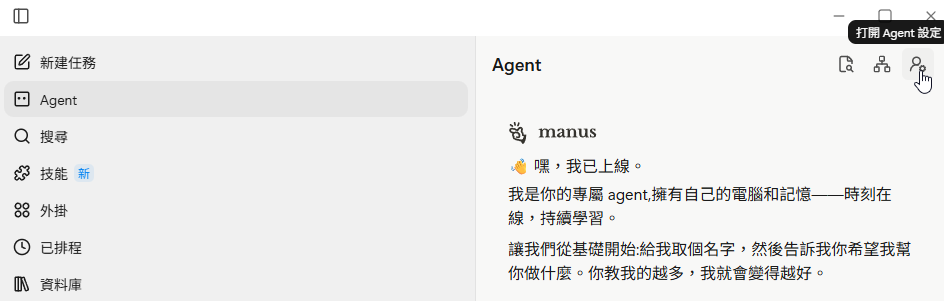

Manus 串接 LINE 完整 5 大步驟 SOP
步驟 1：開啟 Manus Agent 設定
Step 1 / 5
在 Manus 桌面版或網頁版右上角，點擊使用者頭像旁的「打開 Agent 設定」按鈕（圖示為齒輪與小人像），進入 Agent 的整合功能清單。

1. 24/7 行動推播
任務執行完畢時，Manus 直接在 LINE 推播結果與下載連結，無需守在電腦前。
2. 隨手語音下指令
在 LINE 中發送語音或短文字，Manus 即刻啟動多步驟搜尋、整理與產出報表。
3. 雙向安全認證
專屬一次性 :bind 授權碼綁定個人帳號，確保對話與工作區資料絕對隱私。
09:41
M
Manus AI
官方帳號 • 24h 線上
上午 09:30
:bind+fdTu4G987qWeRtx...
M
Successfully connected to Manus!
您好！已成功綁定 Manus 帳號。您可以直接在此傳送訊息或下達任務指令！
快捷測試：